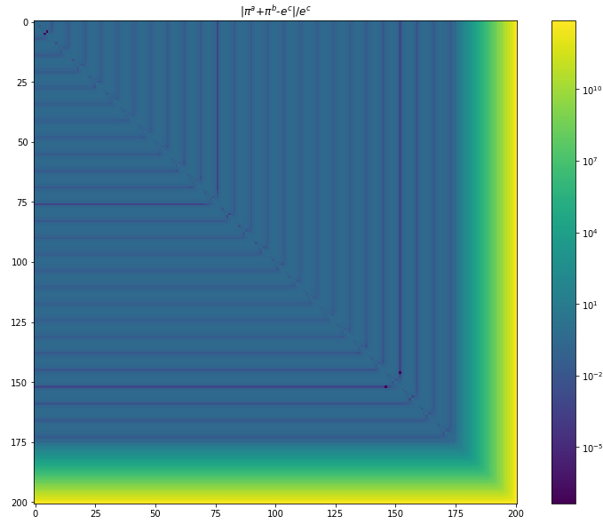

关于Pi和e的巧合
今天在网上偶然看到一个数学中的巧合：
看到之后的第一反应是要去验证一下在多大程度上是近似相等的：
看到这个精确程度我是非常吃惊的，因为在直觉上等式的左右是几乎没有关联性的，但相对误差却小于$10^{-7}$。
更进一步的思考是，在一定范围内，如[0,200]，是否存在一组自然数$a,b,c$，使得相对误差
更小呢？
我们使用遍历法将所有的$\Delta$计算出来，得出下图：

可以发现，在[0,200]范围内，(a,b,c)=(4,5,6)是使得误差最小的组合。次小的组合是(a,b,c)=(146,152,174)，这一组合的相对误差为1e-5，比(4,5,6)高出两个数量级。
这个巧合背后是否有一定的数学原理可以解释呢？我暂时还没有找到任何可以参考的资料，希望以后有缘可以看到关于此式的更多的讨论。